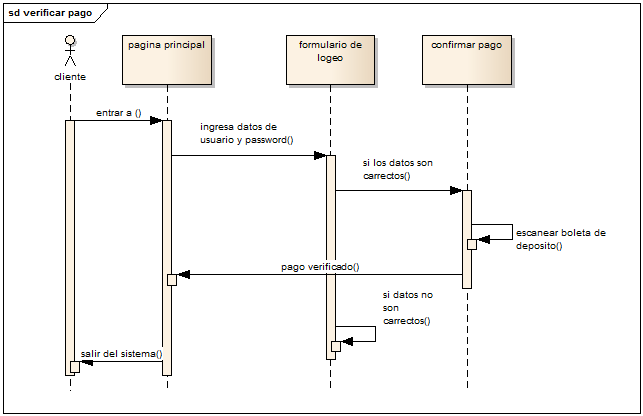

Modelos de Interacción
Todos los sistemas incluyen interacciones de algún tipo. Éstas son interacciones del usuario, que implican entradas y salidas del usuario; interacciones entre el sistema a desarrollar y otros sistemas; o interacciones entre los componentes del sistema. El modelado de interacción del usuario es importante, pues ayuda a identificar los requerimientos del usuario. El modelado de la interacción sistema a sistema destaca los problemas de comunicación que se lleguen a presentar. El modelado de interacción de componentes ayuda a entender si es probable que una estructura de un sistema propuesto obtenga el rendimiento y la confiabilidad requeridos por el sistema.

Enfoques relacionados con el modelado de interacción:
Material
Definiciones
Simbología
Ejemplo